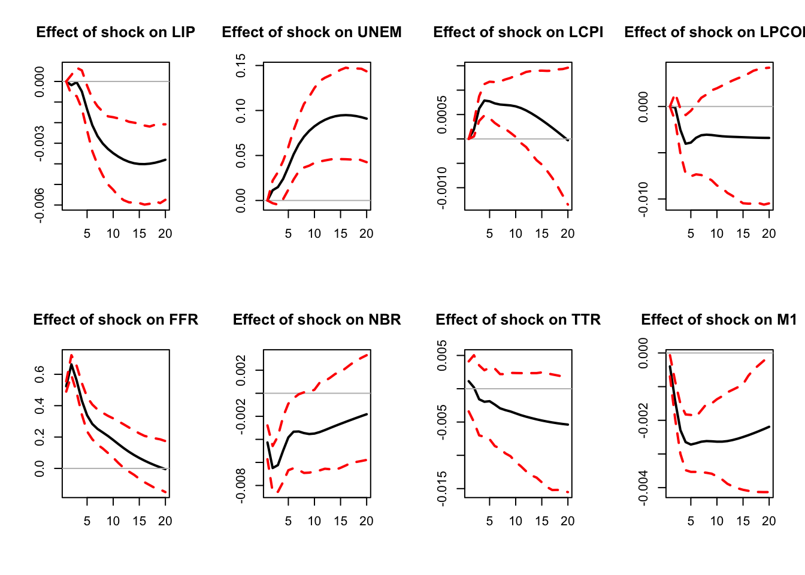
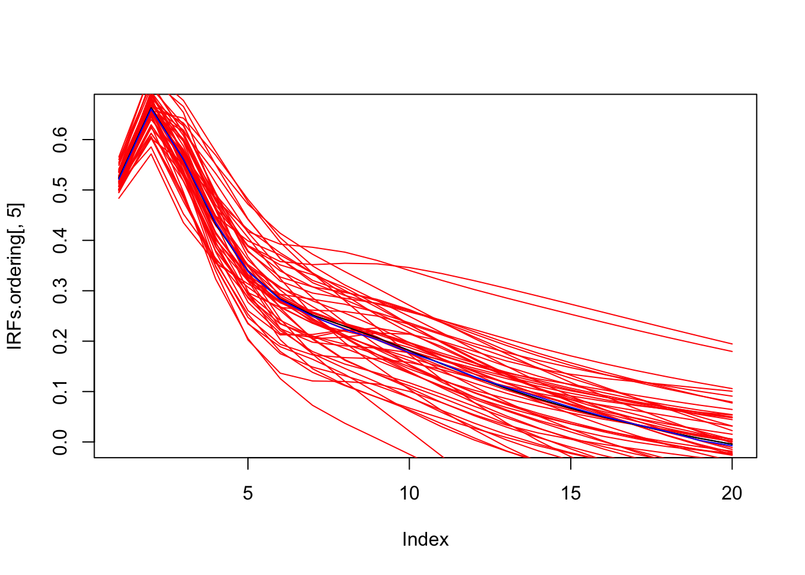
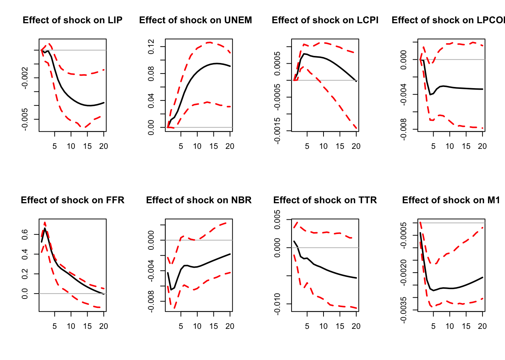
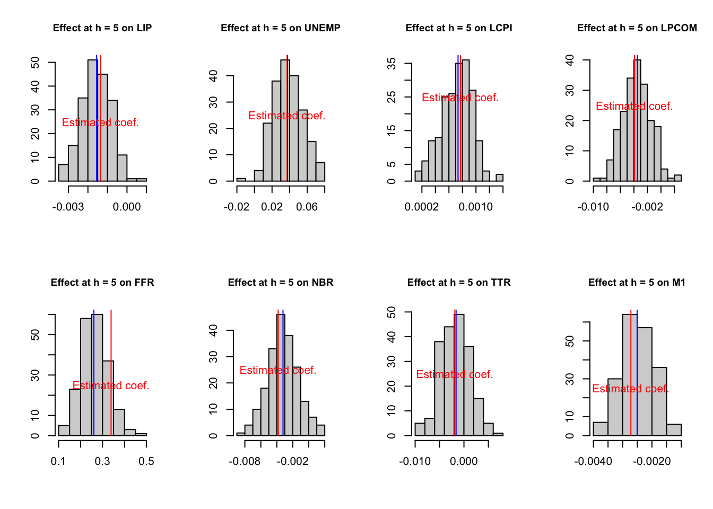
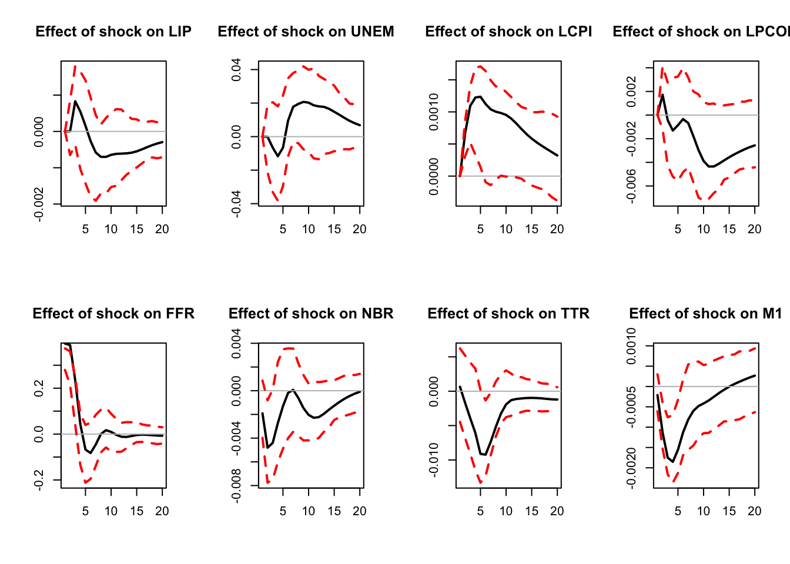
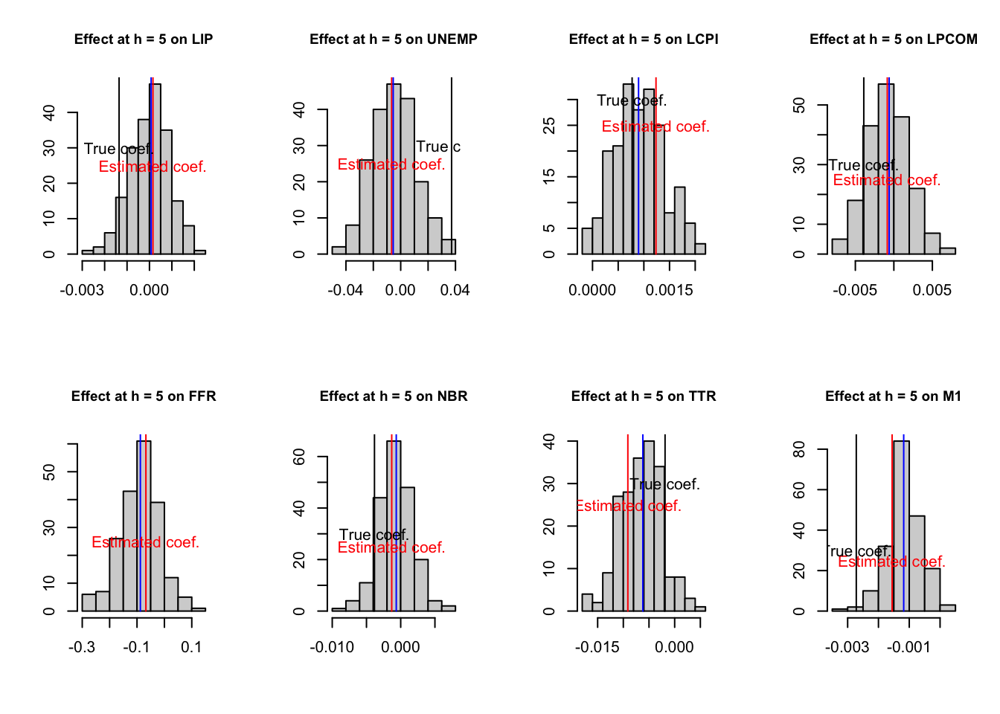
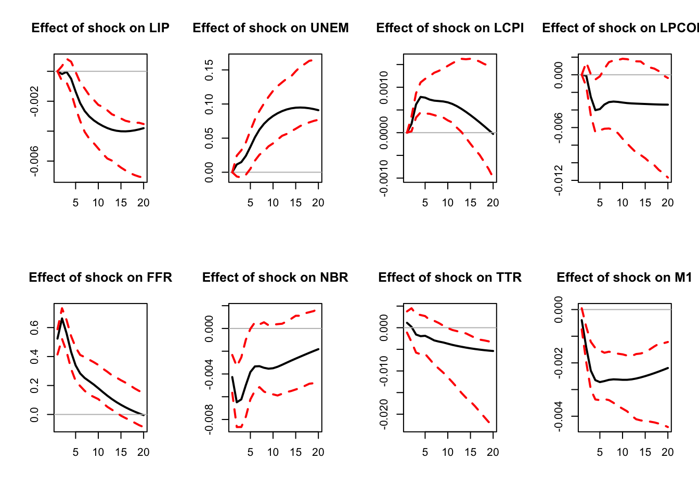

Chapter 3 Inference
Consider the following SVAR model: \[y_t = \Phi_1 y_{t-1} + \dots + \Phi_p y_{t-p} + \varepsilon_t\] where \(\varepsilon_t\) is a white noise sequence. This vector rewrites \(\varepsilon_t=B\eta_t\) where \(\mathbb{V}ar(\eta_t)=I\), which implies \(\Omega_\varepsilon=BB'\).
The corresponding infinite MA representation (Eq. (1.4), or Wold representation, is: \[ y_t = \sum_{h=0}^\infty\Psi_h \eta_{t-h}, \] where \(\Psi_0=B\) and for \(h=1,2,\dots\): \[ \Psi_h = \sum_{j=1}^h\Psi_{h-j}\Phi_j, \] with \(\Phi_j=0\) for \(j>p\) (see Prop. 1.1 for this recursive computation of the \(\Psi_j\)’s).
Inference on the VAR coefficients \(\{\Phi_j\}_{j=1,...,p}\) is straightforward (standard OLS inference). But inference is more complicated regarding IRFs. Indeed, as shown by the previous equation, the (infinite) MA coefficients \(\{\Psi_j\}_{j=1,...}\) are non-linear functions of the \(\{\Phi_j\}_{j=1,...,p}\) and of \(\Omega_\varepsilon\). An other issue pertain to small sample bias: typically, for persistent processes, auto-regressive parameters are known to be downward biased.
The main inference methods are the following:
- Monte Carlo method (Hamilton (1994)) (Section 3.1);
- Asymptotic normal approximation (Lütkepohl (1990)), or Delta method (Section 3.2);
- Bootstrap method (Kilian (1998)) (Sections 3.3 and 3.4).
3.1 Monte Carlo method
We use Monte Carlo when we need to approximate the distribution of a variable whose distribution is unknown (here: the \(\Psi_j\)’s) but which is a function of another variable whose distribution is known (here, the \(\Phi_j\)’s).
For instance, suppose we know the distribution of a random variable \(X\), which takes values in \(\mathbb{R}\), with density function \(p\). Assume we want to compute the mean of \(\varphi(X)\). We have: \[ \mathbb{E}(\varphi(X))=\int_{-\infty}^{+\infty}\varphi(x)p(x)dx \] Suppose that the above integral does not have a simple expression. We cannot compute \(\mathbb{E}(\varphi(X))\) but, by virtue of the law of large numbers, we can approximate it as follows: \[ \mathbb{E}(\varphi(X))\approx\frac{1}{N}\sum_{i=1}^N\varphi(X^{(i)}), \] where \(\{X^{(i)}\}_{i=1,...,N}\) are \(N\) independent draws of \(X\). More generally, the distribution of \(\varphi(X)\) can be approximated by the empirical distribution of the \(\varphi(X^{(i)})\)’s. Typically, if 10’000 values of \(\varphi(X^{(i)})\) are drawn, the \(5^{th}\) percentile of the p.d.f. of \(\varphi(X)\) can be approximated by the \(500^{th}\) value of the 10’000 draws of \(\varphi(X^{(i)})\) (after arranging these values in ascending order).
As regards the computation of confidence intervals around IRFs, one has to think of \(\{\widehat{\Phi}_j\}_{j=1,...,p}\), and of \(\widehat{\Omega}\) as \(X\) and \(\{\widehat{\Psi}_j\}_{j=1,...}\) as \(\varphi(X)\). (Proposition 1.4 provides us with the asymptotic distribution of the “\(X\).”)
To summarize, here are the steps one can implement to derive confidence intervals for the IRFs using the Monte-Carlo approach: For each iteration \(k\),
- Draw \(\{\widehat{\Phi}_j^{(k)}\}_{j=1,...,p}\) and \(\widehat{\Omega}^{(k)}\) from their asymptotic distribution (using Proposition 1.4).
- Compute the matrix \(B^{(k)}\) so that \(\widehat{\Omega}^{(k)}=B^{(k)}B^{(k)'}\), according to your identification strategy.
- Compute the associated IRFs \(\{\widehat{\Psi}_j\}^{(k)}\).
Perform \(N\) replications and report the median impulse response (and its confidence intervals).
The following code implements the Monte Carlo method.
library(IdSS);library(vars);library(Matrix)
data("USmonthly")
First.date <- "1965-01-01"
Last.date <- "1995-06-01"
indic.first <- which(USmonthly$DATES==First.date)
indic.last <- which(USmonthly$DATES==Last.date)
USmonthly <- USmonthly[indic.first:indic.last,]
considered.variables<-c("LIP","UNEMP","LCPI","LPCOM","FFR","NBR","TTR","M1")
y <- as.matrix(USmonthly[considered.variables])
# ===================================
# CEE with Monte Carlo
# ===================================
res.svar.ordering <-
svar.ordering(y,p=3,
posit.of.shock = 5,
nb.periods.IRF = 20,
inference = 3,# 0 -> no inference, 1 -> parametric bootst.,
# 2 <- non-parametric bootstrap, 3 <- Monte Carlo,
# 4 <- bootstrap-after-bootstrap
nb.draws = 200,
confidence.interval = 0.90, # expressed in pp.
indic.plot = 1 # Plots are displayed if = 1.
)
Figure 3.1: IRF associated with a monetary policy shock; Monte Carlo method.
IRFs.ordering <- res.svar.ordering$IRFs
median.IRFs.ordering <- res.svar.ordering$all.CI.median
simulated.IRFs.ordering <- res.svar.ordering$simulated.IRFsBelow we plot the estimated IRFs to a mom^netary policy shock, together with a sample of 50 IRFs simulated with the Monte Carlo method, and the median of all simulated IRFs.
par(mfrow=c(1,1))
plot(IRFs.ordering[,5],type="l")
for(i in 1:50){
lines(simulated.IRFs.ordering[,5,i],col="red",type="l")
}
lines(IRFs.ordering[,5],col="black",type="l")
lines(median.IRFs.ordering[,5],col="blue",type="l")
Figure 3.2: Estimated IRF associated with a monetary policy shock (black line) with simulated IRFs (red lines) and median IRF (blue line); Monte Carlo method.
3.2 Delta method
Suppose \(\beta\) is a vector of parameters and \(\hat\beta\) is an estimator such that \[ \sqrt{T}\,(\hat\beta-\beta)\overset{d}{\longrightarrow}\mathcal{N}(0,\Sigma_\beta), \] where \(\overset{d}{\longrightarrow}\) denotes convergence in distribution, \(\mathcal{N}(0,\Sigma_\beta)\) denotes a multivariate normal distribution with mean vector \(0\) and covariance matrix \(\Sigma_\beta\), and \(T\) is the sample size.
Let \(\varphi(\beta) = (\varphi_1(\beta),\dots,\varphi_m(\beta))'\) be a continuously differentiable function with values in \(\mathbb{R}^m\), and assume that \(\partial \varphi_i/\partial \beta'\) is nonzero at \(\beta\) for \(i = 1,\dots,m\). Then, if \(\varphi\) is not too nonlinear in a neighborhood of \(\beta\), we approximately have \[ \sqrt{T}\,(\varphi(\hat\beta)-\varphi(\beta)) \overset{d}{\approx} \mathcal{N}\!\left( 0,\; \frac{\partial \varphi}{\partial \beta'} \Sigma_\beta \frac{\partial \varphi'}{\partial \beta} \right), \] where \(\frac{\partial \varphi}{\partial \beta'}\) denotes the Jacobian of \(\varphi\) with respect to \(\beta'\).
Using this property, Lütkepohl (1990) provides the asymptotic distributions of the \(\Psi_j\)’s.
A limit of the last two approaches (Monte Carlo and the Delta method) is that they rely on asymptotic results and the normality assumption. Boostrapping approaches are more robust in small-sample and non-normal situations.
3.3 Bootstrap
IRFs’ confidence intervals are intervals where 90% (or 95%, 75%, …) of the IRFs would lie, if we were to repeat the estimation a large number of times in similar conditions (\(T\) observations). We obviously cannot do this, because we have only one sample: \(\{y_t\}_{t=1,..,T}\). But we can try to construct such samples.
Bootstrapping consists in:
- re-sampling \(N\) times, i.e., constructing \(N\) samples of \(T\) observations, using the estimated VAR coefficients and
- a sample of residuals from the distribution \(\mathcal{N}(0,BB')\) (parametric approach), or
- a sample of residuals drawn randomly from the set of the actual estimated residuals \(\{\hat\varepsilon_t\}_{t=1,..,T}\). (non-parametric approach).
- re-estimating the SVAR \(N\) times.
Here is the algorithm for the non-parametric approach:
- Construct a sample \[ y_t^{(k)}=\widehat{\Phi}_1 y_{t-1}^{(k)} + \dots + \widehat{\Phi}_p y_{t-p}^{(k)} + \hat\varepsilon_t^{(k)}, \] with \(\hat\varepsilon_{t}^{(k)}=\hat\varepsilon_{s_t^{(k)}}\), where \(\{s_1^{(k)},..,s_T^{(k)}\}\) is a random set from \(\{1,..,T\}^T\). (Note: in the parametric approach, we would draw \(\hat\varepsilon_{t}^{(k)}\) from the \(\mathcal{N}(0,BB')\) distribution)
- Re-estimate the SVAR and compute the IRFs \(\{\widehat{\Psi}_j\}^{(k)}\).
Perform \(N\) replications and report the median impulse response (and its confidence intervals).
The following code implements the bootstrap method.
library(IdSS);library(vars);library(Matrix)
data("USmonthly")
First.date <- "1965-01-01"
Last.date <- "1995-06-01"
indic.first <- which(USmonthly$DATES==First.date)
indic.last <- which(USmonthly$DATES==Last.date)
USmonthly <- USmonthly[indic.first:indic.last,]
considered.variables<-c("LIP","UNEMP","LCPI","LPCOM","FFR","NBR","TTR","M1")
y <- as.matrix(USmonthly[considered.variables])
# ===================================
# CEE with bootstrap
# ===================================
res.svar.ordering <-
svar.ordering(y,p=3,
posit.of.shock = 5,
nb.periods.IRF = 20,
inference = 2,# 0 -> no inference, 1 -> parametric bootstr.,
# 2 <- non-parametric bootstrap, 3 <- monte carlo,
# 4 <- bootstrap-after-bootstrap
nb.draws = 200,
confidence.interval = 0.90, # expressed in pp.
indic.plot = 1 # Plots are displayed if = 1.
)
Figure 3.3: IRF associated with a monetary policy shock; bootstrap method.
3.4 Bootstrap-after-bootstrap
The previous simple bootstrapping procedure deals with non-normality and small sample distribution, since we use the actual residuals. However, it does not deal with the small sample bias, stemming, in particular, from small-sample bias associated with OLS coefficient estimates \(\{\widehat{\Phi}_j\}_{j=1,..,p}\).
The code below illustrates the small sample bias.
# Distribution of coefficients stemming from non-parametric bootstrap
n <- length(considered.variables)
h <- 5
par(mfrow=c(2,ifelse(round(n/2)==n/2,n/2,(n+1)/2)))
for (i in 1:n){
hist(simulated.IRFs.ordering.bootstrap[h,i,],xlab="",ylab="",
main=paste("Effect at h = ",h," on ",
considered.variables[i],sep=""),cex.main=.9)
lines(array(c(IRFs.ordering.bootstrap[h,i],
IRFs.ordering.bootstrap[h,i],0,100),c(2,2)),col="red")
lines(array(c(median.IRFs.ordering.bootstrap[h,i],
median.IRFs.ordering.bootstrap[h,i],0,100),c(2,2)),col="blue")
text(IRFs.ordering.bootstrap[h,i],25,label="Estimated coef.",col="red")
}
Figure 3.4: Estimated and bootstrapped coefficients.
The distribution of the bootstrapped coefficients is not centered around the estimated coefficients.
In the following code, we perform the VAR estimation and bootstrap inference after generating artificial data. We can then compare the IRFs and confidence intervals to the ``true’’ parameters used to generate the data.
# Simulate a small sample
est.VAR <- VAR(y,p=3)
Phi <- Acoef(est.VAR)
cst <- Bcoef(est.VAR)[,3*n+1]
resids <- residuals(est.VAR)
Omega <- var(resids)
B.hat <- t(chol(Omega))
y0.star <- NULL
for(k in 3:1){
y0.star <- c(y0.star,y[k,])
}
small.sample <- simul.VAR(c=rep(0,dim(y)[2]),
Phi,
B.hat,
nb.sim = 100,
y0.star,
indic.IRF = 0)
colnames(small.sample) <- considered.variables
# Estimate the VAR with the small sample
res.svar.small.sample <-
svar.ordering(small.sample,p=3,
posit.of.shock = 5,
nb.periods.IRF = 20,
inference = 2,# 0 -> no inference, 1 -> parametric bootstr.,
# 2 <- non-parametric bootstrap, 3 <- monte carlo
nb.draws = 200,
confidence.interval = 0.90, # expressed in pp.
indic.plot = 1 # Plots are displayed if = 1.
)
Figure 3.5: Simulated IRF associated with a monetary policy shock.
IRFs.small.sample <- res.svar.small.sample$IRFs
median.IRFs.small.sample <- res.svar.small.sample$all.CI.median
simulated.IRFs.small.sample <- res.svar.small.sample$simulated.IRFs# True IRFs
res.svar.ordering <-
svar.ordering(y,p=3,
posit.of.shock = 5,
nb.periods.IRF = 20,
inference = 0,# 0 -> no inference, 1 -> parametric bootstr.,
# 2 <- non-parametric bootstrap, 3 <- monte carlo,
# 4 <- bootstrap-after-bootstrap
indic.plot = 0 # Plots are displayed if = 1.
)
IRFs.ordering.true <- res.svar.ordering$IRFs
# Distribution of coefficients resulting from the small sample VAR
h <- 5
par(mfrow=c(2,ifelse(round(n/2)==n/2,n/2,(n+1)/2)))
for (i in 1:n){
hist(simulated.IRFs.small.sample[h,i,],xlab="",ylab="",
main=paste("Effect at h = ",h," on ",
considered.variables[i],sep=""),cex.main=.9)
lines(array(c(IRFs.small.sample[h,i],
IRFs.small.sample[h,i],0,100),c(2,2)),col="red")
lines(array(c(median.IRFs.small.sample[h,i],
median.IRFs.small.sample[h,i],0,100),c(2,2)),col="blue")
lines(array(c(IRFs.ordering.true[h,i],
IRFs.ordering.true[h,i],0,100),c(2,2)),col="black")
text(IRFs.small.sample[h,i],25,label="Estimated coef.",col="red")
text(IRFs.ordering.true[h,i],30,label="True coef.",col="black")
}
Figure 3.6: IRF associated with a monetary policy shock; sign-restriction approach.
The main idea of the bootstrap-after-bootstrap of Kilian (1998) is to run two consecutive boostraps: the objective of the first is to compute the bias, which can further be used to correct the initial estimates of the \(\Phi_i\)’s. Further, these corrected estimates are used —in the second boostrap— to compute a set of IRFs (as in the standard boostrap).
More formally, the algorithm is as follows:
- Estimate the SVAR coefficients \(\{\widehat{\Phi}_j\}_{j=1,..,p}\) and \(\widehat{\Omega}\)
- First bootstrap. For each iteration \(k\):
- Construct a sample \[ y_t^{(k)}=\widehat{\Phi}_1 y_{t-1}^{(k)} + \dots + \widehat{\Phi}_p y_{t-p}^{(k)} + \hat\varepsilon_t^{(k)}, \] with \(\hat\varepsilon_{t}^{(k)}=\hat\varepsilon_{s_t^{(k)}}\), where \(\{s_1^{(k)},..,s_T^{(k)}\}\) is a random set from \(\{1,..,T\}^T\).
- Re-estimate the VAR and compute the coefficients \(\{\widehat{\Phi}_j\}_{j=1,..,p}^{(k)}\).
- Perform \(N\) replications and compute the median coefficients \(\{\widehat{\Phi}_j\}_{j=1,..,p}^*\).
- Approximate the bias terms by \(\widehat{\Theta}_j=\widehat{\Phi}_j^*-\widehat{\Phi}_j\).
- Construct the bias-corrected terms \(\widetilde{\Phi}_j=\widehat{\Phi}_j-\widehat{\Theta}_j\).
- Second bootstrap. For each iteration \(k\):
- Construct a sample now from \[ y_t^{(k)}=\widetilde{\Phi}_1 y_{t-1}^{(k)} + \dots + \widetilde{\Phi}_p y_{t-p}^{(k)} + \hat\varepsilon_t^{(k)}. \]
- Re-estimate the VAR and compute the coefficients \(\{\widehat{\Phi}^*_j\}_{j=1,..,p}^{(k)}\).
- Construct the bias-corrected estimates \(\widetilde{\Phi}_j^{*(k)}=\widehat{\Phi}_j^{*(k)}-\widehat{\Theta}_j\).
- Compute the associated IRFs \(\{\widetilde{\Psi}_j^{*(k)}\}_{j\ge 1}\).
- Perform \(N\) replications and compute the median and the confidence interval of the set of IRFs.
It should be noted that correcting for the bias can generate non-stationary results (\(\tilde \Phi\) with eigenvalue with modulus \(>1\)). Solution (Kilian (1998)):
In step 5, check if the largest eigenvalue of \(\tilde\Phi\) is of modulus <1. If not, shrink the bias: for all \(j\)s, set \(\widehat{\Theta}_j^{(i+1)}=\delta_{i+1}\widehat{\Theta}_j^{(i)}\), with \(\delta_{i+1}=\delta_i-0.01\), starting with \(\delta_1=1\) and \(\widehat{\Theta}_j^{(1)} =\widehat{\Theta}_j\), and compute \(\widetilde{\Phi}_j^{(i+1)}=\widehat{\Phi}_j-\widehat{\Theta}_j^{(i+1)}\) until the largest eigenvalue of \(\tilde\Phi^{(i+1)}\) has modulus <1.
The following code implements the bootstrap-after-bootrap method.
library(IdSS);library(vars);library(Matrix)
data("USmonthly")
First.date <- "1965-01-01"
Last.date <- "1995-06-01"
indic.first <- which(USmonthly$DATES==First.date)
indic.last <- which(USmonthly$DATES==Last.date)
USmonthly <- USmonthly[indic.first:indic.last,]
considered.variables<-c("LIP","UNEMP","LCPI","LPCOM","FFR","NBR","TTR","M1")
y <- as.matrix(USmonthly[considered.variables])
# ===================================
# CEE with bootstrap-after-bootstrap
# ===================================
res.svar.ordering <-
svar.ordering(y,p=3,
posit.of.shock = 5,
nb.periods.IRF = 20,
inference = 4,# 0 -> no inference, 1 -> parametric bootstr.,
# 2 <- non-parametric bootstrap, 3 <- monte carlo,
# 4 <- bootstrap-after-bootstrap
nb.draws = 200,
confidence.interval = 0.90, # expressed in pp.
indic.plot = 1 # Plots are displayed if = 1.
)
Figure 3.7: IRF associated with a monetary policy shock; sign-restriction approach.
IRFs.ordering <- res.svar.ordering$IRFs
median.IRFs.ordering <- res.svar.ordering$all.CI.median
simulated.IRFs.ordering <- res.svar.ordering$simulated.IRFsAs an alternative, function VAR.Boot of package VAR.etp (Kim (2022)) can be used to operate the bias-correction approach of Kilian (1998):
library(VAR.etp)
library(vars) #standard VAR models
data(dat) # part of VAR.etp package
corrected <- VAR.Boot(dat,p=2,nb=200,type="const")
noncorrec <- VAR(dat,p=2)
rbind(corrected$coef[1,],
(corrected$coef+corrected$Bias)[1,],
noncorrec$varresult$inv$coefficients)## inv(-1) inc(-1) con(-1) inv(-2) inc(-2) con(-2) const
## [1,] -0.336021 0.1055152 1.046487 -0.1296053 0.1804746 0.9404151 -0.01932734
## [2,] -0.319631 0.1459888 0.961219 -0.1605511 0.1146050 0.9343938 -0.01672199
## [3,] -0.319631 0.1459888 0.961219 -0.1605511 0.1146050 0.9343938 -0.01672199